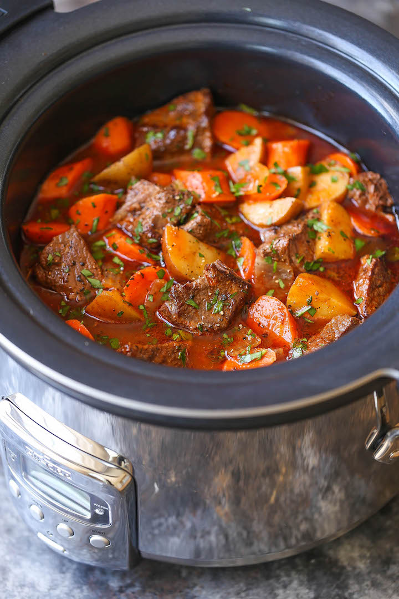

Beef Stew

By Oli
Description
Instant Pot slow cooker beef in red wine recipe
Ingredients
- 500g Steak cut into pieces
- 2 Onions
- 200g Mushrooms
- 2 Sticks celery
- 1 Bottle red wine
- Carrots and other veg
- Garlic, herbs'n'stuff
Steps
- Saute the meat and onions
- Shove everything else in
- Cover with boiling water
- Put on low and slow for hours and hours